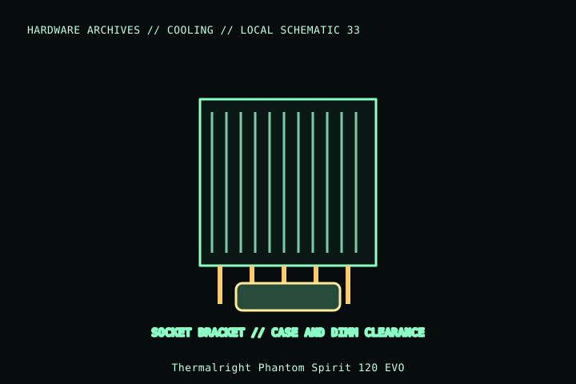

[ INDIVIDUAL COMPONENT // COOLING ]
Thermalright Phantom Spirit 120 EVO
Phantom Spirit 120 EVO is a seven-heatpipe dual-tower cooler with two supplied 120 mm PWM fans. This is the EVO variant, not the existing Phantom Spirit 120 SE or Peerless Assassin model.

MODEL IDENTIFICATION: Verify full model, suffix, SKU, generation, connector, and host-support documentation against the physical item. The record describes only the identified model and does not guarantee host compatibility.
Specifications
| Exact identity | Phantom Spirit 120 EVO |
|---|---|
| Heatsink envelope | 110 × 125 × 157 mm; approximately 810 g heatsink-only per manufacturer listing. |
| Heatpipes | Seven 6 mm heatpipes. |
| Included fans | Two TL-K12 120 × 120 × 25 mm PWM fans; manufacturer speed rating 2,150 rpm ±10% maximum. |
| Mounting | Manufacturer lists Intel LGA115x/1200/1700/1851/2011/2066 and AMD AM4/AM5; kit/revision must match the actual package. |
| Clearance | 157 mm installed height; check RAM/VRM clearance, fan lift, and PCIe layout on the target board. |
Compatibility and installation
- Check exact EVO identity and current socket kit list; do not substitute details from SE, EVO RGB, or other Spirit variants.
- Measure case clearance and check raised front-fan height over memory and clearance around board heatsinks.
- Connect both 4-pin PWM fans within the header/splitter current rating.
Service notes
Stop and restrain fans while cleaning. After removing the heatsink, renew the thermal interface and follow the correct socket-specific mounting procedure; inspect fan clips and base contact.
Manufacturer references
- Thermalright — Phantom Spirit 120 EVOManufacturer page identifies the EVO model, dimensions, socket list, and fan specifications.
- Thermalright — SupportManufacturer manuals and mounting guidance.
Model variants and revisions may change specifications or included hardware; the manufacturer’s exact product page/manual and the host manual take precedence.